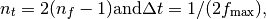
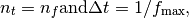
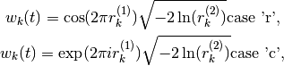

llrf package¶
Submodules¶
llrf.RF_noise module¶
Methods to generate RF phase noise from noise spectrum
| Authors: | Helga Timko |
|---|
-
class
LLRF.RF_noise.PhaseNoise(object).__init__(self, frequency_array, real_part_of_spectrum, seed1=None, seed2=None)¶ The PhaseNoise class contains the spectrum of RF phase noise and the actual phase noise randomly generated from this spectrum (via mixing with white noise).
Parameters: - frequency_array (numpy.array) – input frequency range
- real_part_of_spectrum (numpy.array) – input spectrum, real part only, same length as
frequency_array - seeds (int) – seeds for random number generator
Returns: time and phase noise arrays
Warning
The spectrum has to be input as double-sided spectrum, in units of radian-square per hertz.
Both hermitian to real and complex to complex FFTs are available. Use seeds to
fix a certain random number sequence; with seed=None a random sequence will
be initialized.
spectrum_to_phase_noise(self, transform=None)¶Transforms a noise spectrum to phase noise data.
Parameters: transform (choice) – FFT transform kind Note
Use
transform=Noneor'r'to transform hermitian spectrum to real phase. In this case, input only the positive part of the double-sided spectrum. Usetransform='c'to transform complex spectrum to complex phase. In this case, input first the zero and positive frequency components, then the decreasingly negative frequency components of the double-sided spectrum. Returns only the real part of the phase noise. E.g. the following two ways of usage are equivalent:
The transformation in steps¶
Step 1: Set the resolution in time domain. To transform a hermitian spectrum to real phase noise,

and to transform a complex spectrum to complex phase noise,

where fmax is the maximum frequency in the input in both cases.
Step 2: Generate white (carrier) noise in time domain

Step 3: Transform the generated white noise to frequency domain

Step 4: In frequency domain, colour the white noise with the desired noise probability density (unit: radians). The noise probability density derived from the double-sided spectrum is

where A=2 for transform = 'r' and A=1 for transform = 'c'. The
coloured noise is obtained by multiplication in frequency domain

Step 5: Transform back the coloured spectrum to time domain to obtain the final phase shift array (we use only the real part).